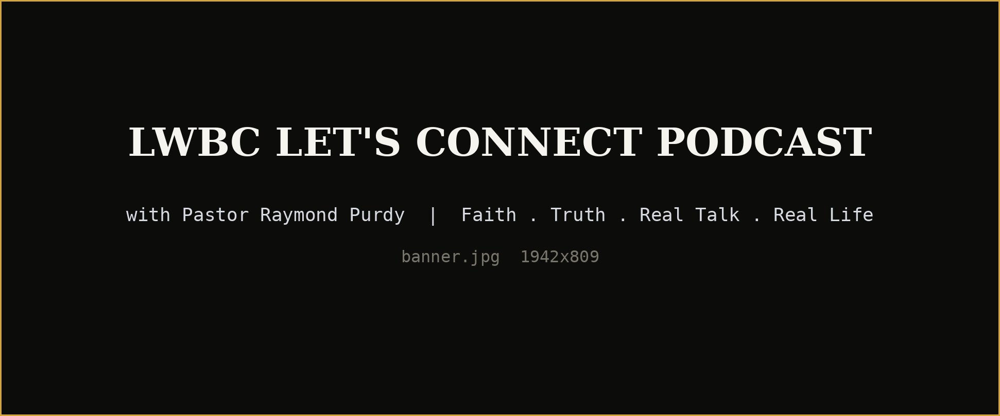

Subscribe
New episodes land automatically once you subscribe on any of these.
Subscribing on any of these follows the full LWBC Let’s Connect channel, which also includes The Question Mark Podcast with Gordon Conger.